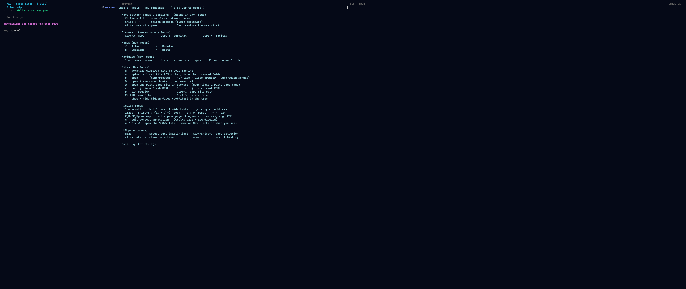

Keybindings
The frontend reads its keybindings from a TOML file. Each action maps to one chord, or to a list of chords. Any action you do not override falls through to the built-in default, so a bindings file need only list what you want to change.
The repo's bindings live in .sot/keybindings.toml; this page documents the discovery order, the chord grammar, and every action with its default chord(s). For the other configuration files see Configuration Files.

The? overlay: every action with its current chord, including your overrides.Discovery order
The first file found wins for the actions it lists; unlisted actions still fall through to the built-in defaults:
$SOT_KEYBINDINGS— explicit path override.<repo-root>/.sot/keybindings.toml— the project's bindings (the file in this repo).$HOME/.config/sot/keybindings.toml— per-user bindings.- Built-in defaults compiled into the frontend.
Each action's chord(s) in an earlier file override the built-in default for that action; an absent action falls through to the default.
Chord grammar
A chord is zero or more modifier+ tokens followed by exactly one key:
[modifier+]... key- Modifiers (case-insensitive):
ctrl,alt(aliasesoption,meta),shift. - Key: either a single character (
=,z,+) or aNamedKey:Tab,Enter,Escape,Space,Backspace,Delete,ArrowUp,ArrowDown,ArrowLeft,ArrowRight,PageUp,PageDown,Home,End.
Multiple chords for one action are written as a TOML list:
font.scale_up = ["Ctrl+=", "Ctrl++"]The shift rule
Shift is enforced only when the chord declares it. On a US layout typing + already carries shift, so Alt+= matches both = and + when alt is held; writing Alt+Shift+= enforces the shift state explicitly. This is why the zoom-in binding can list both Ctrl+= and Ctrl++ to cover the shifted and unshifted key.
Actions and default chords
Grouped logically. Chords below are the defaults set in .sot/keybindings.toml.
Panes
| Action | Default chord | Scope / notes |
|---|---|---|
pane.maximize | Alt+= | Maximise the focused pane to fill the window. |
pane.restore | Escape | Restore the full layout. Esc triggers this only while a pane is maximized; otherwise Esc passes through to the pty / edit mode / etc. |
Sessions
| Action | Default chord | Scope / notes |
|---|---|---|
session.create | Enter | Sessions picker — commit the cursored directory as a new workspace, starting the comm-aware agent (ccb) in the pane. |
session.create_bare | Shift+Enter | Commit the cursored directory as a new workspace with no LLM agent (plain shell/REPL). |
session.create_bare is matched before session.create, so a non-shift session.create chord still fires when its shifted bare variant is held — keep create_bare on a strictly-more-specific chord (here, the added Shift).
Modes
| Action | Default chord | Scope / notes |
|---|---|---|
mode.files | f | Switch the nav root to Files mode. |
mode.modules | m | Switch to Modules mode. |
mode.sessions | s | Switch to Sessions mode. |
mode.hosts | h | Switch to Hosts mode. |
Mode switches are active only in nav focus — single-character chords stay literal text in the pty, editor, and prompts.
Drawers
| Action | Default chord | Scope / notes |
|---|---|---|
drawer.repl | Ctrl+j | Toggle the Julia REPL drawer (global). |
drawer.terminal | Ctrl+t | Toggle the Terminal drawer (global). |
drawer.monitor | Ctrl+m | Toggle the server Monitor drawer (global). |
Drawer toggles are global — they fire even when another pane has focus.
Focus
| Action | Default chord | Scope / notes |
|---|---|---|
focus.pane_left | Ctrl+ArrowLeft | Move focus to the pane on the left (global, 4-way). |
focus.pane_right | Ctrl+ArrowRight | Move focus right. |
focus.pane_up | Ctrl+ArrowUp | Move focus up. |
focus.pane_down | Ctrl+ArrowDown | Move focus down. |
Spatial focus is kept disjoint from plain arrows (per-pane navigation) and Shift+Arrow (workspace cycle).
Workspace
| Action | Default chord | Scope / notes |
|---|---|---|
workspace.cycle_next | Shift+ArrowRight | Cycle to the next workspace (global; ignored while editing a file). |
workspace.cycle_prev | Shift+ArrowLeft | Cycle to the previous workspace. |
Chrome
| Action | Default chord | Scope / notes |
|---|---|---|
quit | Ctrl+q | Quit. Nav focus only — won't fire in the pty panes. |
help.toggle | ? | Toggle the help overlay. Nav / preview focus, outside edit mode. |
view.fullscreen | F11 | Toggle window fullscreen. |
transport.reconnect | F5 | Reconnect the backend transport. |
Font
| Action | Default chord | Scope / notes |
|---|---|---|
font.scale_up | Ctrl+=, Ctrl++ | Zoom in. = and shifted + both zoom in. |
font.scale_down | Ctrl+-, Ctrl+_ | Zoom out. - and _ both zoom out. |
font.scale_reset | Ctrl+0 | Reset font scale. |
In-pane context (fixed)
These single-key actions feed context to the in-pane agent. They are not yet rebindable — they are not part of the configurable action set above.
| Key | Scope | What it does |
|---|---|---|
c | file nav focus | Copy the cursored file's path (absolute, backend-side) to the OS clipboard — paste it into the agent's prompt. |
c | preview focus | Crop the visible region of a zoomed image preview and send it to the in-pane agent. |
See also
- Configuration Files —
settings.tomlandhosts.toml.